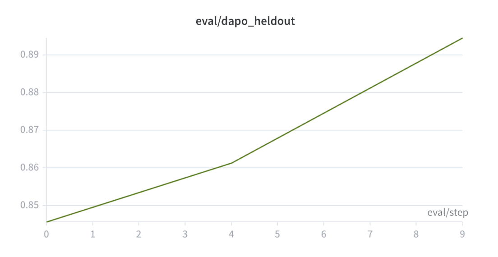
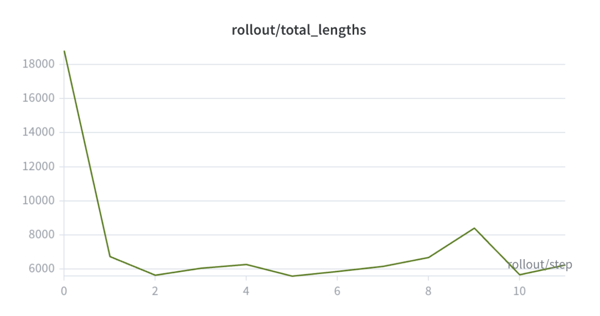

LMSYS旗下的开源RL训练框架 Miles 近期新增了对 On-Policy Distillation（OPD，在线策略蒸馏）的重要支持。OPD现已集成到Miles的rollout和训练流程中，用户可以让student模型仅通过teacher指导训练，也可以将teacher指导与GRPO/PPO风格的强化学习目标结合。
本文介绍Miles中的OPD实现、稀疏teacher-scoring工作流，以及在单台 8×NVIDIA B200 节点上使用Qwen3.5-35B-A3B进行的自蒸馏实验。实验表明，无需任何任务特定奖励，OPD就能将teacher模型的短推理行为迁移到base student模型，同时保持student的原有性能。
Miles将OPD实现为一种加性的反向KL散度训练信号，支持两种重要模式：
纯蒸馏（Pure distillation）：student仅通过teacher信号训练，任务奖励设为零，更新完全由逐token的学生-教师反向KL散度驱动。
RL增强蒸馏（RL-augmented distillation）：将OPD信号与任务奖励和GRPO/PPO风格的优势估计器结合，让student同时从环境反馈和teacher指导中学习。
Rollout方面，Miles通过SGLang托管的teacher支持 sampled-token OPD 和 top-k OPD。Sampled-token OPD中，teacher对学生实际采样的token进行评分；Top-k OPD则在每个位置保留多个候选token及其logprob，teacher对这些候选评分，Miles将其对齐后计算反向KL信号。
OPD中一个关键系统优化是稀疏student-to-teacher scoring工作流。
在初始实现中，scoring工作流需要构建所有位置top-k token ID的全局并集，然后让teacher在每个响应位置对这个完整并集进行评分。这在长响应推理中会产生 R × |U| 的稠密中间payload（R是响应长度，U是全局token ID并集），即 O(R²K) 的JSON传输量，而OPD计算只需要 O(RK) 的值。
新工作流用稀疏逐位置候选token scoring替代了稠密全局并集路径。 Miles向teacher发送每个位置的token ID表，teacher只返回每个位置自己候选集所需的logprob。这使得teacher响应payload与实际的OPD计算对齐：Miles只携带OPD所需的稀疏R × K值。
为了验证实现，团队在单台 8×NVIDIA B200 节点上使用 Qwen3.5-35B-A3B 进行了一组受控自蒸馏实验。
设置： Teacher先用RLVR（基于可验证奖励的强化学习）训练，学会用大幅缩短的响应解决DAPO数学问题。Student是对应的RL前base checkpoint。为了隔离OPD的效果，使用纯蒸馏模式：任务奖励设为零，训练信号为top-1学生-教师反向KL。
对比起点：
| 模型 | DAPO性能 | 平均响应长度 |
| RLVR teacher | 0.8870 | 6,248 tokens |
| 初始base student | 0.8457 | 18,675 tokens |
实验结果清晰证明了OPD能高效传输短推理行为：
Held-out DAPO性能从0.8457 提升到0.8945。
采样rollout长度在第一次更新后大幅下降，从约18.6k tokens稳定到5.5k–6.7k tokens。
逐token OPD反向KL从约0.045降至0.010，说明student分布正在向teacher分布靠近。
由于实验中原始任务奖励为零，行为变化完全由OPD teacher信号驱动。核心结论：纯OPD能将teacher的高效推理行为迁移到base student，同时held-out DAPO性能不降反升。



OPD的实现让Miles能够应用在仅靠可验证任务奖励不够的场景中。许多实际工作流不仅需要优化任务成功率，还需要优化模型行为：推理长度、响应风格、领域习惯、与参考模型的分布对齐等。
OPD还提供了多teacher整合的路径：不同领域的专家teacher可以为不同能力提供指导，让单个student模型吸收互补行为。由于Miles将OPD视为可复用的原语，同一套student训练流程可以支持不同的teacher和蒸馏方案。
实现上，OPD与RL目标可组合：用户可以运行纯蒸馏，也可以将OPD作为辅助信号与GRPO/PPO结合。稀疏逐位置scoring和top-k OPD确保了长响应工作负载下的高效性。
参考：https://www.lmsys.org/blog/2026-07-18-opd-support-in-miles